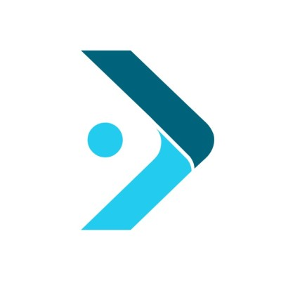
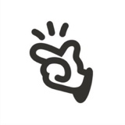
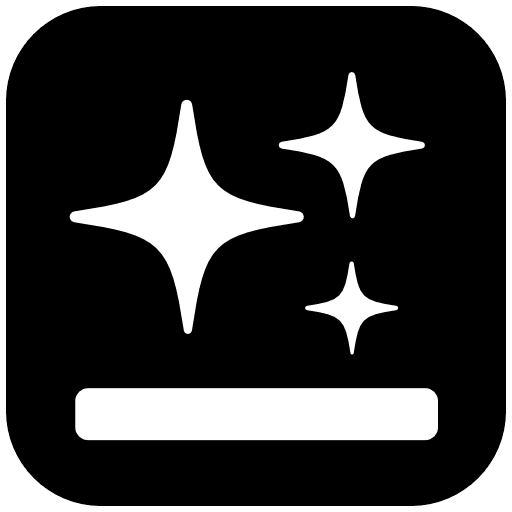
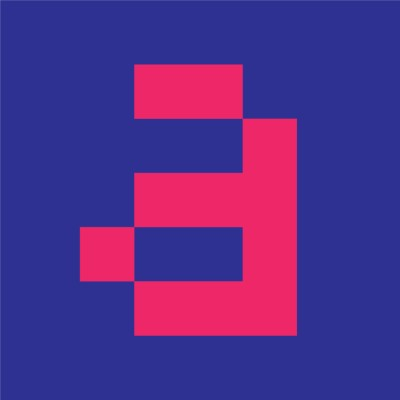
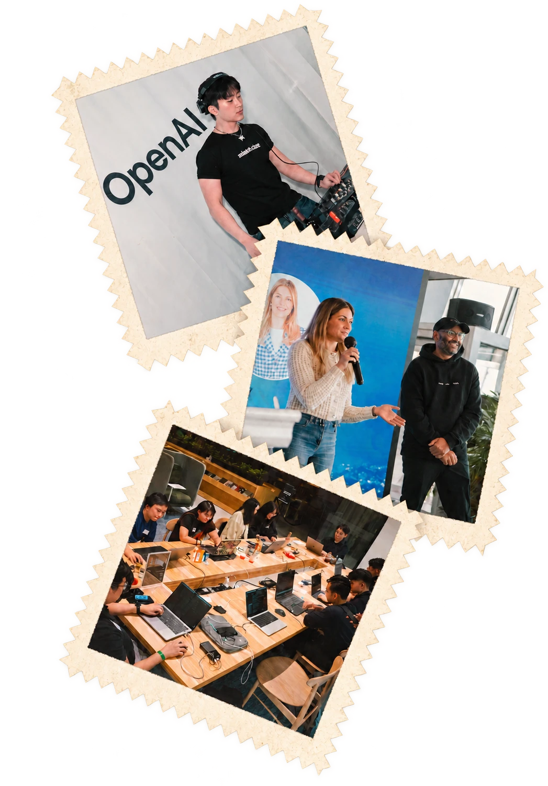
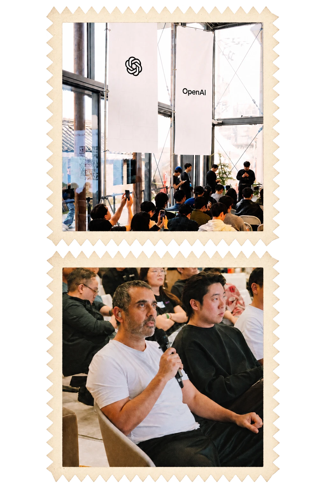
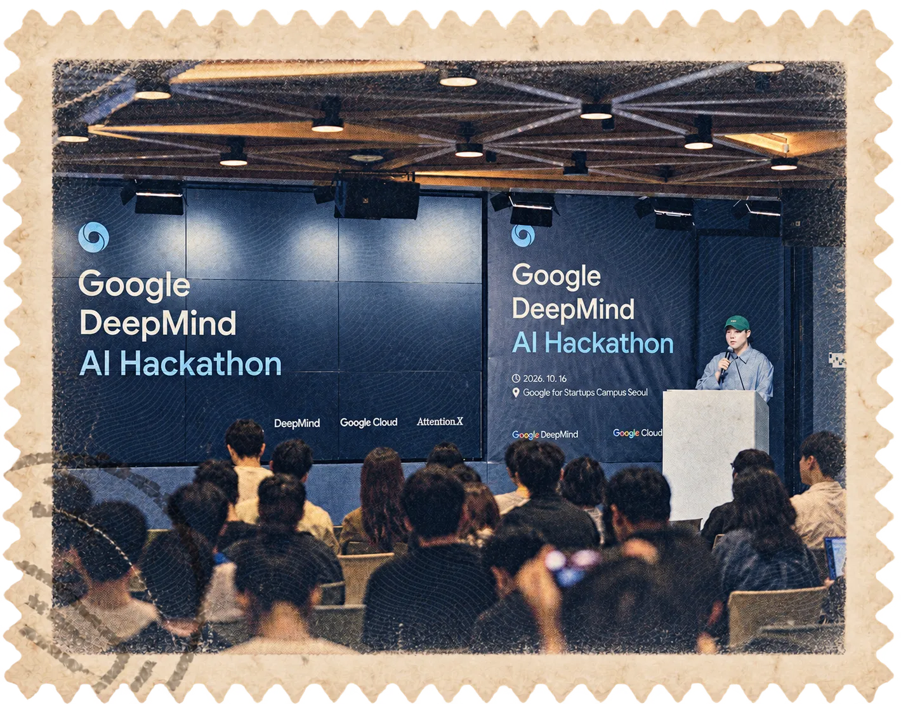

We are Korea’s AI ecosystem.
Startups founded by our fellows are backed by A16Z, Arielle Zuckerberg, Y Combinator, Samsung Ventures, and SoftBank.
Fellowship
We are an AI researchers & founders fellowship based in Seoul from academia and industry. We work on research, open-source projects, and real-world applications to build the next leading AI startups.
Raised by our fellows
Our fellows have raised over $70M in funding from leading venture funds and institutional investors.


Milestones
We’re the launchpad for
- Korean founders going global.
- Global AI companies entering Korea.

Dentronic secures $1M, joins SPC fellowship to scale dental AI robots
SPC fellowship to scale dental AI robots- Google DeepMind Gemini 3 Hackathon Seoul
- leads AIM Intelligence’s Series‑A to scale AI security in Korea
- OpenAI Startup Meetup Seoul
- Korea Launch for

Manus AI,
Genspark, Replit, and Claude Code - Google DeepMind Gemini 4 Hackathon Seoul
AttentionX Fellow
“If you’re building AI in Korea, you’ll end up at AttentionX eventually. Might as well go early.”

Aleph Lab YC F25raises Seed
Led by Long Journey Ventures


raises ₩10B
Series‑A led by Samsung Ventures
AttentionX Fellow
“Sukone and AttentionX were instrumental in helping AIM Intelligence recruit top AI researchers from the AttentionX builder community. They truly bring together the best AI talent in Korea and beyond.”
Events
(10)- Replit x OpenAI x AWS x GHV Founders Hackathon
- Google DeepMind Gemini 4 Argon Hackathon
- OpenAI Startup Meetup Seoul
- Google DeepMind Gemini 3 Hackathon Seoul
- Anthropic Claude Code Meetup Seoul
- Manus Meetup Seoul
- Genspark Meetup Seoul
- Google DeepMind Gemini 3 Hackathon Singapore
- Google Cloud Hackathon
- Anthropic Claude Code Meetup Pangyo
The first maritime startup to join a16z speedrun.

News (03)
-
Alumni News: Adam Lee publishes “Beckmann World Models: Direct Terminal-Map Learning for One-Step Action-Conditioned Prediction”.
-
Alumni News: Sukone Hong, featured in Frontier List’s “Great SF event hosts”, alongside Dave Fontenot (HF0), Ben Lang (Cursor), and Vivian Shen (Y Combinator).
-
Alumni News: Aristo raises Pre-Seed funding from Kakao Ventures, building synced memory layer for AI agents.
© 2026 AttentionX. All rights reserved.
AttentionX™ is a trademark of its respective owner.


